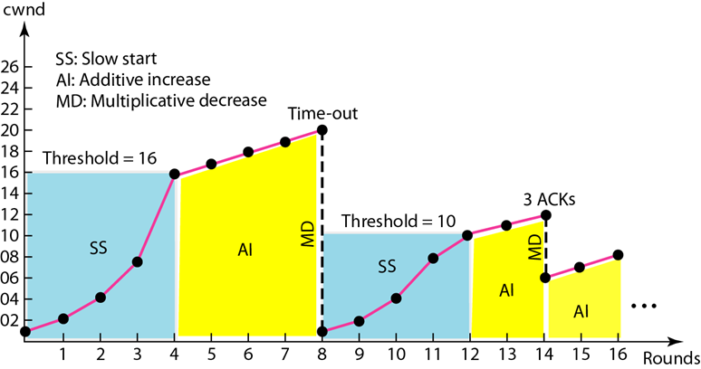

<h1 id="第-24-章-拥塞控制和服务质量"><a href="#第-24-章-拥塞控制和服务质量" class="headerlink" title="第 24 章 拥塞控制和服务质量"></a>第 24 章 拥塞控制和服务质量</h1><h2 id="1-网络性能通常由两个网络因素来衡量：吞吐量和延迟"><a href="#1-网络性能通常由两个网络因素来衡量：吞吐量和延迟" class="headerlink" title="1.  网络性能通常由两个网络因素来衡量：吞吐量和延迟"></a>1.  网络性能通常由两个网络因素来衡量：吞吐量和延迟</h2><h3 id="吞吐量和延迟-IMP"><a href="#吞吐量和延迟-IMP" class="headerlink" title="吞吐量和延迟 [IMP]"></a>吞吐量和延迟 [IMP]</h3><ul>
<li>通常是衡量网络性能的因素</li>
<li>吞吐量:<ul>
<li>单位时间内通过网络的分组数量</li>
<li>载荷小于网络容量时, 吞吐量随载荷增加成比例增长</li>
<li>载荷达到网络容量时, 吞吐量会急剧下降 (一些分组被丢弃导致重传)</li>
</ul>
</li>
<li>延迟: 当载荷远小于网络容量时，延迟最小<ul>
<li>最小延迟是由传播延迟和处理延迟所组成的，且都可以忽略不计</li>
<li>载荷达到网络容量时, 延迟急剧增加 (分组需要排队)</li>
</ul>
</li>
</ul>
<ul>
<li><h3 id="吞吐量和延迟-IMP-1"><a href="#吞吐量和延迟-IMP-1" class="headerlink" title="吞吐量和延迟 [IMP]"></a>吞吐量和延迟 [IMP]</h3><ul>
<li>通常是衡量网络性能的因素</li>
<li>吞吐量:<ul>
<li>单位时间内通过网络的分组数量</li>
<li>载荷小于网络容量时, 吞吐量随载荷增加成比例增长</li>
<li>载荷达到网络容量时, 吞吐量会急剧下降 (一些分组被丢弃导致重传)</li>
</ul>
</li>
<li>延迟: 当载荷远小于网络容量时，延迟最小<ul>
<li>最小延迟是由传播延迟和处理延迟所组成的，且都可以忽略不计</li>
<li>载荷达到网络容量时, 延迟急剧增加 (分组需要排队)</li>
</ul>
</li>
</ul>
</li>
</ul>
<h2 id="二-典型的拥塞控制方法"><a href="#二-典型的拥塞控制方法" class="headerlink" title="二.  典型的拥塞控制方法"></a>二.  典型的拥塞控制方法</h2><h4 id="开环拥塞控制-预防"><a href="#开环拥塞控制-预防" class="headerlink" title="开环拥塞控制(预防)"></a>开环拥塞控制(预防)</h4><ul>
<li>重传 (例如 TCP)</li>
<li>窗口 (比如选择性重复 ARQ)</li>
<li>确认 (ACK, 使用一个 ACK 确认多个分组与停止-等待 ARQ)</li>
<li>丢弃 (按照优先级)</li>
<li>许可 (虚电路建立连接时检查是否有拥塞, 有则拒绝建立连接)</li>
</ul>
<h4 id="闭环拥塞控制-消除"><a href="#闭环拥塞控制-消除" class="headerlink" title="闭环拥塞控制(消除)"></a>闭环拥塞控制(消除)</h4><ul>
<li>背压: 从目的端方向的节点逐个拒绝接受上行节点的数据, 直到源端</li>
<li>抑制分组: 从发生拥塞的节点发送警告信息到源端</li>
<li>隐含信令: 进行推测, 例如过长时间没有收到确认</li>
<li>显示信令: 把信号包含在携带数据的分组中, 分前向信令 (向发生拥塞的方向), 后向信令 (原理发生拥塞的方向)</li>
</ul>
<h3 id="TCP中的拥塞控制（接上一章）"><a href="#TCP中的拥塞控制（接上一章）" class="headerlink" title="TCP中的拥塞控制（接上一章）"></a>TCP中的拥塞控制（接上一章）</h3><ul>
<li><h3 id="TCP-拥塞控制"><a href="#TCP-拥塞控制" class="headerlink" title="TCP 拥塞控制"></a>TCP 拥塞控制</h3><ul>
<li>在这里确定 cwnd 大小 (Congestion Window, 拥塞窗口)</li>
<li>采用三个阶段: 慢速启动, 拥塞避免, 拥塞检测</li>
<li>慢速启动: 指数增长<ul>
<li>开始时 cwnd = 1 MSS (最大段长度, 在连接建立时确定, 相当于这时窗口大小为一个段)</li>
<li>每一个段的确认都会使 cwnd+1, <strong>按照指数规律增长</strong></li>
<li>到达<strong>阈值</strong>时, 结束慢速启动阶段</li>
</ul>
</li>
<li>拥塞避免: 加性增加<ul>
<li>每次窗口中所有段均被确认后才有 cwnd+1</li>
<li>直到检测到拥塞</li>
</ul>
</li>
<li>拥塞检测: 乘性减少<ul>
<li>若重传计时器到时, 说明拥塞可能很严重: 段丢失且一直没收到相关信息<ul>
<li>强烈反应<ul>
<li>阈值设置为 cwnd 的一半</li>
<li>cwnd = 1 MSS</li>
<li>开始慢速启动阶段</li>
</ul>
</li>
<li>相当于阈值变为实际上限的一半, 然后重启传输 (速度方面)</li>
</ul>
</li>
<li>若接收到三个 ACK, 说明可能有轻度拥塞, 一些段可能已经成功到达, 仅有部分缺失<ul>
<li>轻度反应<ul>
<li>阈值设置为 cwnd 的一半</li>
<li>cwnd = 阈值 (部分实现是 阈值+3)</li>
<li>开始拥塞避免阶段 (就是加性增加)</li>
</ul>
</li>
</ul>
</li>
</ul>
</li>
</ul>
<a href="https://gitee.com/HorizonChaser/pic-bed/raw/master/img/20210622114245.png"></a><blockquote>
<p>SS: 慢速启动 (指数增长)<br>AI: 加性增加<br>MD: 乘性减少<br>Threshold: 阈值</p>
</blockquote>
</li>
</ul>
